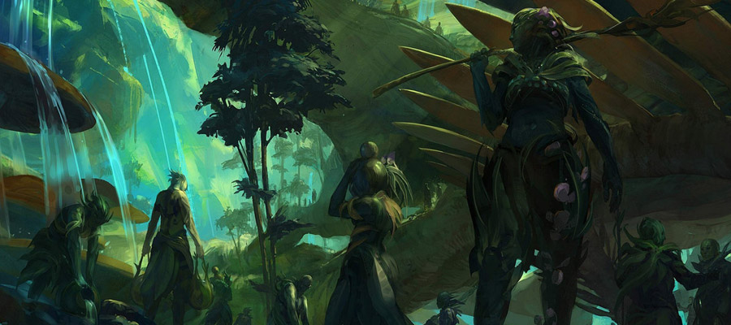
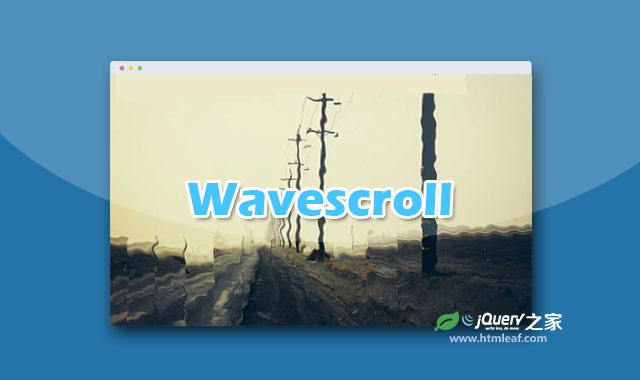

基本的轻量级响应式jQuery幻灯片插件
A flexible, responsive, yet simple jquery slideshow
jQuery之家
返回下载页
DEMO1
DEMO2
DEMO3
Example 1
This is the basic usage of the plugin.

← previous
next →
如果你喜欢这个插件，那么你可能也喜欢:
hslider.js-简洁的响应式全屏宽度jQuery幻灯片插件

基于GSAP的响应式全屏背景图片jQuery幻灯片插件